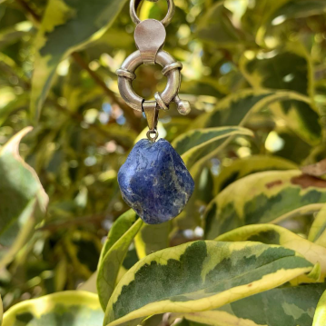

¡Conocé mas sobre la energía de las piedras!


- 

Si hablamos de la cornalina, tenemos que tener en cuenta tres propiedades energéticas centrales: equilibrio emocional motivación y creatividad. Es una excelente piedra para aquellos que desean salir de su zona de confort y es de mucha ayuda llevar una cornalina con nosotros en aquellos momentos en que necesitamos tranquilidad y gran inventiva para encontrar soluciones, como en exámenes o situaciones en las que se nos pone a prueba esto se debe a su gran poder estabilizador y a su aporte de motivación, vitalidad y creatividad. En el aspecto psicológico, las cornalinas ayudan a disuadir el miedo a la muerte con su paralela aceptación al ciclo de la vida. Nos aporta la capacidad para eliminar pensamientos equívocos durante la meditación y así, desarrollar la concentración al máximo. Por último, y en lo referente a las emociones, la cornalina hace que la envidia, la rabia y el resentimiento (hacia ti y hacia terceros) se acabe ya que tiene el poder de equilibrar nuestras emociones.
El cuarzo rosa es la piedra del amor incondicional. Nos ense√±a la verdadera esencia de amor; esta asociado fundamentalmente al chakra del coraz√≥n. Funciona extrayendo suavemente las energ√≠as negativas reemplazándolas por vibraciones amorosas. Puede fortalecer todo tipo de v√≠nculos como amistades, lazos familiares y relaciones de pareja. Facilita el perd√≥n y la autoaceptaci√≥n. Esto se debe a que fomenta la energ√≠a del amor en todas sus formas, con los demás y con nosotros mismos.Además de ayudarte a amar a otras personas, logras amarte y a encontrarte a ti mismo. Es el cristal ideal para alivianar las rupturas amorosas porque nos motiva a soltar el rencor y el enojo para adoptar una perspectiva desde el amor y la aceptaci√≥n ü´Ças√≠ como ayuda a abrir los corazones cerrados que se niegan a amar nuevamente.
El Cuarzo Verde es considerado un mineral muy poderoso, pues además de estar asociado a la buena suerte y la fortuna también representa la salud, esperanza, bienestar, armonía, prosperidad así como se lo relaciona con los cambios y la renovación. Proporciona equilibrio entre la mente y el cuerpo, aportando estabilidad y calma emocional. Se utiliza principalmente para proteger, desbloquear y sanar el chakra del corazón.
Uno de nuestros cristales √ìnix favoritos es el √ìnix cielo no solo por su notable belleza, sino tambi√©n por sus fascinantes propiedades energ√©ticas. Es un cristal armonizante, transmite gran calma y relajaci√≥n üïâ ayuda a estar en armon√≠a con tu entorno y a aprender lecciones, impartiendo confianza en uno mismo. Puede ser de mucha utilidad para aquellas personas que est√©n pasando por un momento de depresi√≥n o melancol√≠a ya que ayuda a pensar objetivamente da valor y fuerza e infunde voluntad. Además, promueve vigor y perseverancia. En su poder vibratorio posee la capacidad de estabilizarnos, mitiga el terror a lo desconocido. Podemos colocar un √≥nix engarzado colgando del cuello para que aflore en nosotros la paz, para eliminar los sentimientos de culpabilidad y prevenir cualquier tipo de enfermedad mental.
Cuando llevamos un ónix con nosotros como una joya, sobre todo un ónix negro, son cruciales sus poderes de protección y autocontrol. Al ónix se lo vincula con la fe, la confianza y el logro de metas y sueños. El ónix negro tiene una gran capacidad de protección ya que absorbe y transforma la energía negativa que esté dentro nuestro o que llegue a nosotros desde afuera, en forma de ataques de negatividad o malas vibras. Además, esta piedra preciosa es tu compañera en los desafíos, metas o proyectos decisivos que tengas en tu vida. Esto se debe a que promueve la confianza, el autocontrol y la toma prudente y objetiva de decisiones. En su poder vibratorio posee la capacidad de estabilizarnos, eliminando miedos y potenciando la seguridad y la valentía.
La raíz de Esmeralda nos ayuda con nuestro equilibrio mental. Es un cristal de inspiración, creatividad e infinita paciencia. Potencia las habilidades psíquicas abre la clarividencia y estimula la captación de sabiduría de los planos mentales. Protegen a los viajantes tanto por agua tierra o aire y también promueven nuestra salud interior. A esta piedra se le adjudica el poder de fortalecer la memoria y brindar elocuencia oratoria. La raíz de Esmeralda no es fácil de conseguir frecuentemente y por eso estamos tan contentos de haberla conseguido para ustedes!.
La selenita simboliza la pureza espiritual. Se considera una piedra para la expansión de la consciencia ayuda a calmar la mente. ❕La selenita tiene una vibración muy fina, aporta claridad y lucidez mental estimula la actividad cerebral y activa los centros de energía superiores, como el chakra de la corona. Infunde paz profunda y es excelente para la meditación o el trabajo espiritual. En lo que respecta a lo psicológico, la selenita potencia el juicio y la comprensión En relación con el plano mental, limpia la confusión y dispersa y estabiliza las emociones.
Esta piedra está relacionada íntimamente con la elevación espiritual la meditación y la protección energética. Además, une la lógica con la intuición❕Infunde un deseo de verdad y un impulso idealista, posibilitando que seas fiel a ti mismo y defiendas tus creencias.Fomenta el pensamiento racional la objetividad y la verdad. Sodalita es una piedra fuerte para el chakra del tercer ojo y el chakra de la garganta. Dentro del área del chakra del tercer ojo es donde se encuentra la glándula pineal y la sodalita es capaz de activar esta glándula. Esta piedra tiene una vibración que te ayuda a entender mejor la vida que estás viviendo, y cómo llegaste a estar en la situación en la que te encuentras.
La turmalina es un mineral de una composición sumamente compleja. Los colores que presenta son: negro, rosa, verde, rojo, entre otros. La más conocida de todas es la turmalina negra y es la gema por excelencia para absorber la negatividad no solo de las demás personas, si no también las del individuo que la posee. Equilibra todos los chakras. Protege contra la polución electromagnética procedente de teléfonos móviles o computadoras y mejora la concentración. Es por eso que muchas personas eligen tener una turmalina en su ambiente de trabajo como el escritorio u oficina. Sin dudas la turmalina es el la piedra por excelencia a la hora de protegernos contra la mala energía y por eso es aconsejable llevar una con nosotros en todo momento… ¿Vos ya tenés tu turmalina?.